Website Bisnis & E-commerce
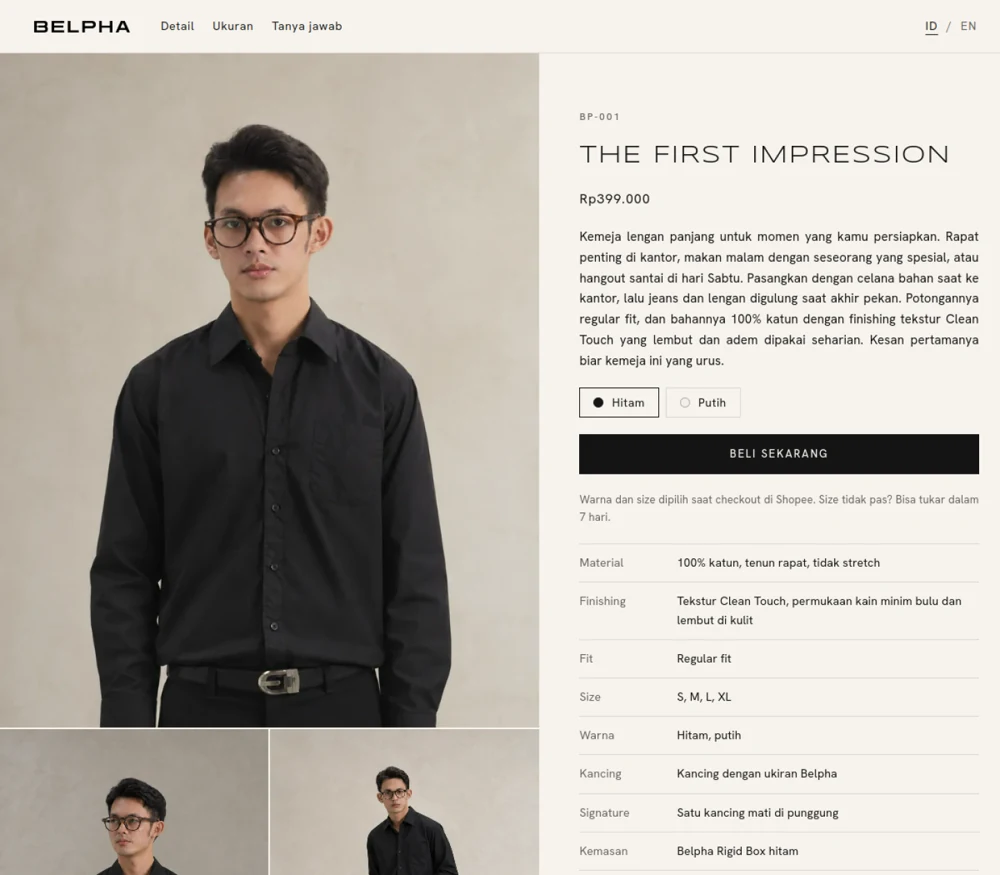
Profil usaha, katalog & toko online
Tampilkan produk dengan detail yang membantu pelanggan memilih, lalu arahkan mereka langsung ke WhatsApp atau halaman pembelian.
YEARIO ENDRIANO · DEVELOPER
Mulai dari website bisnis dan e-commerce, aplikasi kasir dan operasional, hingga otomasi data antar aplikasi.
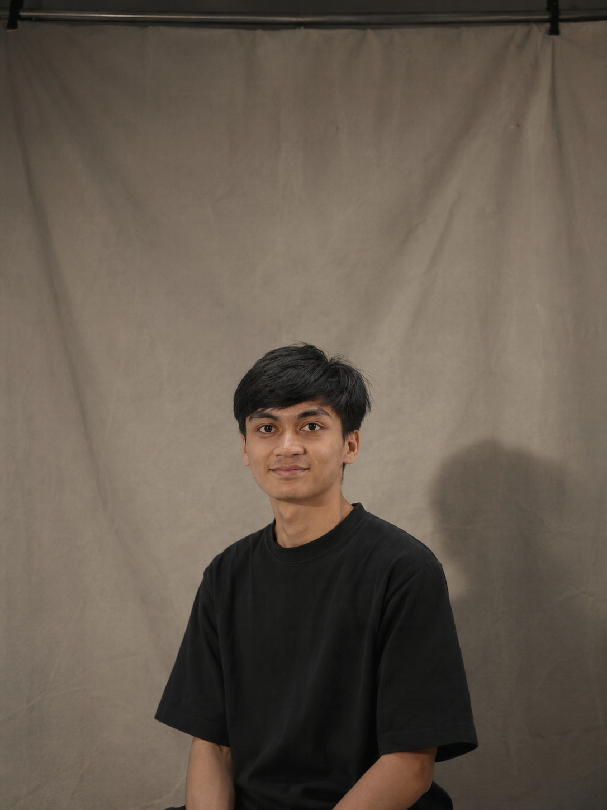
TENTANG SAYA
Saya Yeario Endriano, Founder Belpha dan lulusan Teknik Industri Universitas Sebelas Maret. Saya membangun website dan sistem dengan pendekatan Teknik Industri: memetakan alur kerja, menemukan proses yang paling memakan waktu, lalu merancangnya ulang agar lebih efisien. Pendekatan ini saya terapkan untuk menyelesaikan masalah klien di berbagai sektor bisnis.
Setiap tahap saya jelaskan dengan bahasa sehari-hari, jadi Anda bisa ikut memutuskan tanpa perlu paham teknis.
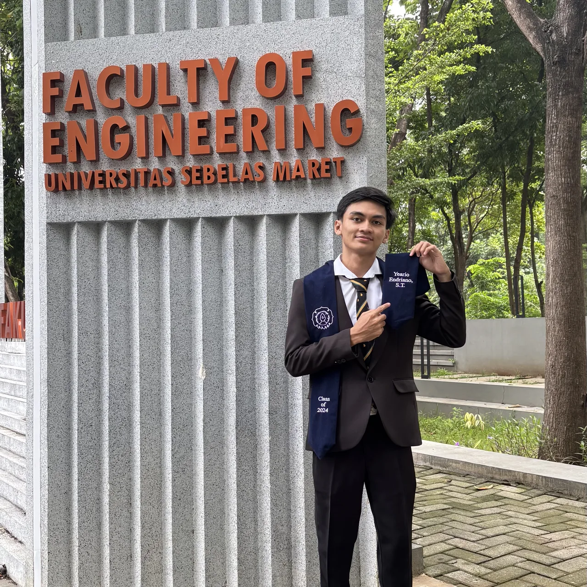
WEBSITE · APLIKASI · OTOMASI
Untuk UMKM hingga perusahaan menengah. Pilih yang paling mendesak, atau gabungkan sesuai kebutuhan.

Profil usaha, katalog & toko online
Tampilkan produk dengan detail yang membantu pelanggan memilih, lalu arahkan mereka langsung ke WhatsApp atau halaman pembelian.
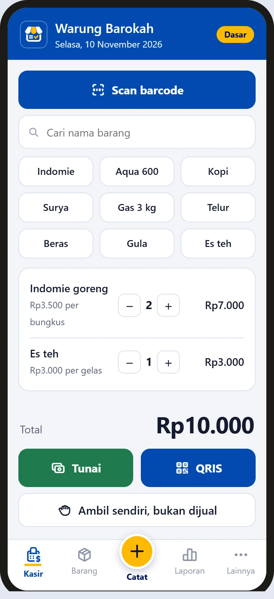
Transaksi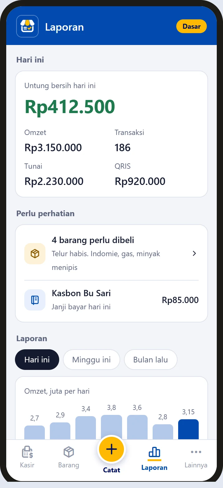
LaporanKasir, stok, laporan & administrasi
Catat transaksi, pantau stok, dan lacak data operasional dalam satu aplikasi. Laporan tersusun otomatis tanpa rekap manual.
Data pindah otomatis antar aplikasi
Data dari satu sistem langsung masuk ke sistem lain, sehingga tim berhenti input ulang dan copy-paste antar spreadsheet.
Semua proyek di bawah ini saya bangun sendiri, dari website brand hingga sistem operasional. Coba langsung atau tonton demonya.
Website Bisnis & E-commerce
Website brand kemeja pria. Pengunjung bisa menjelajahi koleksi, melihat detail bahan, dan memilih ukuran yang pas lewat panduan produk.
Aplikasi Operasional · Proyek klien
Melacak klaim insentif per IMEI dan mencocokkannya otomatis dengan Credit Note dari distributor. Klaim yang belum cair langsung terlihat. Demo memakai data contoh untuk menjaga kerahasiaan klien.
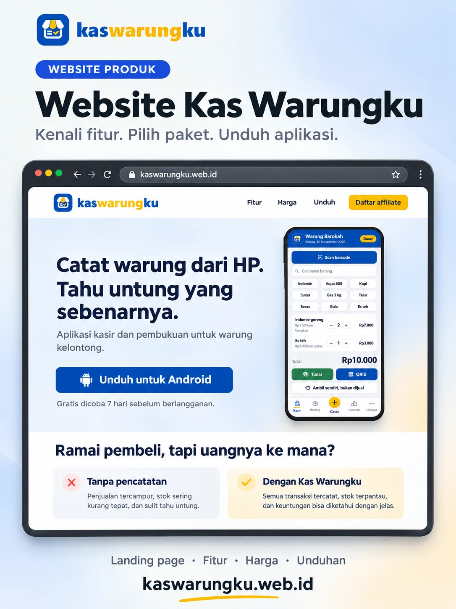
Website Bisnis · Landing page
Landing page yang menjelaskan fitur dan paket Kas Warungku, menjawab pertanyaan calon pengguna, dan mengarahkan ke unduhan aplikasi Android.
Aplikasi Operasional · Android
Aplikasi kasir untuk warung: catat penjualan, pantau stok, kelola kasbon, dan lihat laporan untung. Tetap bisa mencatat tanpa sinyal, lalu sinkron otomatis saat kembali online.
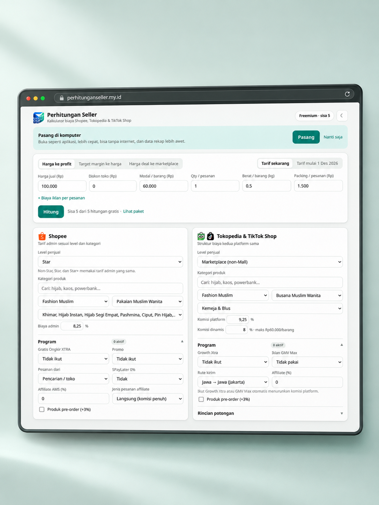
Produk siap pakai · Web app
Kalkulator untuk seller marketplace. Masukkan biaya dan target margin, lalu dapatkan estimasi profit dan harga jual yang sesuai.
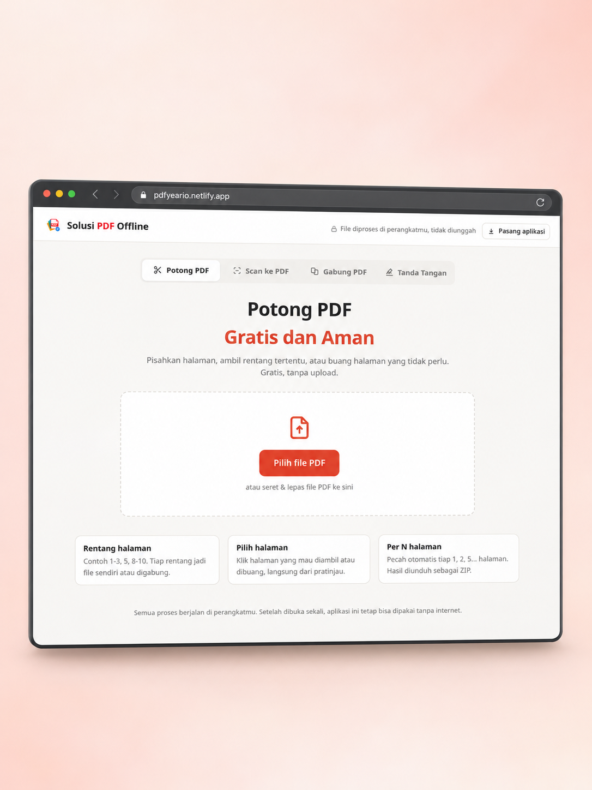
Produk siap pakai · Alat PDF
Potong, scan, gabung, dan tanda tangani PDF dalam satu aplikasi. Dokumen diproses langsung di perangkat Anda.
Empat tahap dari diskusi pertama sampai sistem siap dipakai. Biaya dan jadwal disepakati sebelum pengerjaan dimulai.
Kita bahas tujuan, siapa penggunanya, dan proses yang ingin diperbaiki.
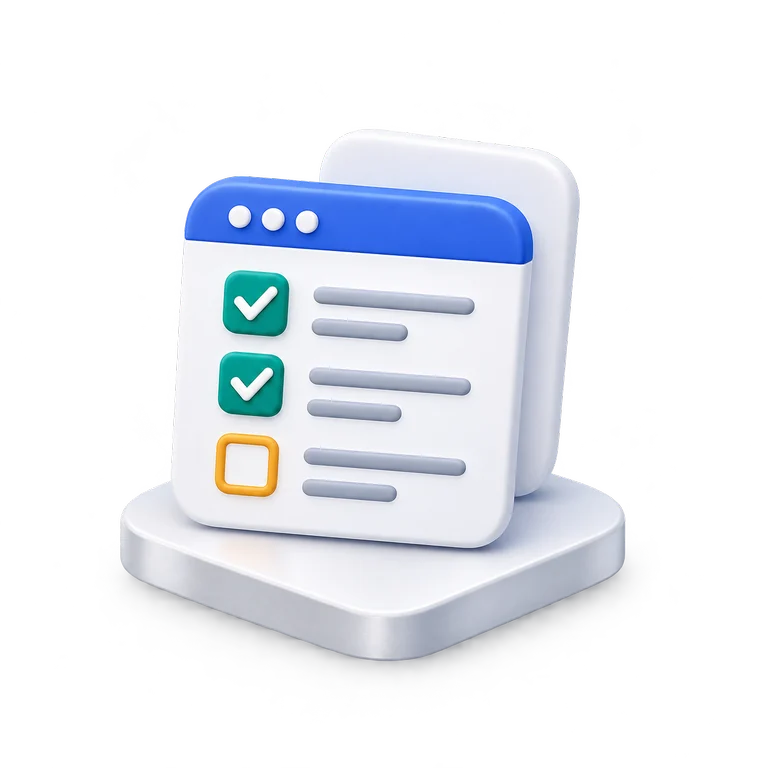
Saya susun prioritas fitur, penawaran biaya, dan jadwal pengerjaan.
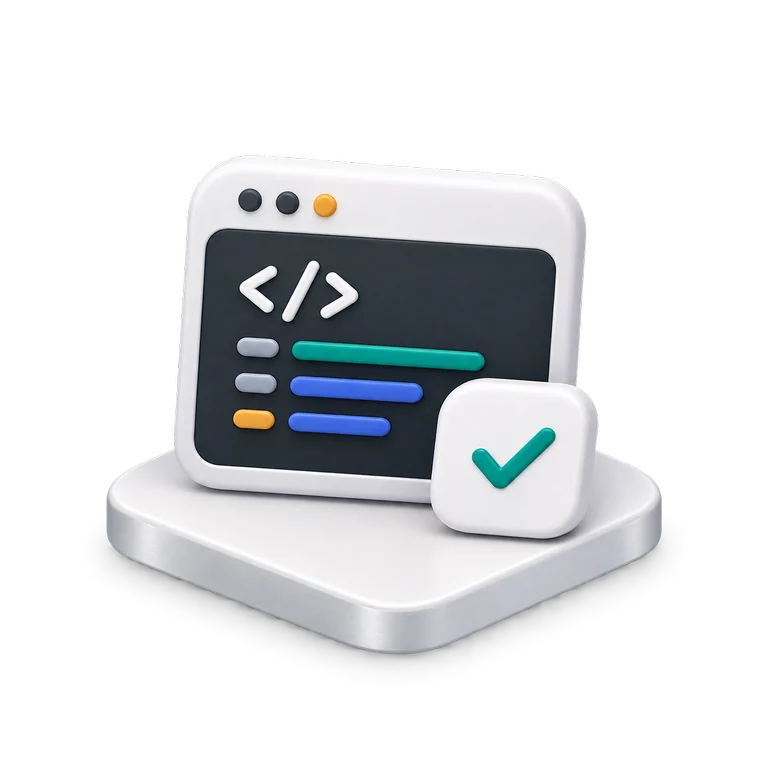
Saya membangun solusinya, lalu Anda meninjau dan memberi masukan.
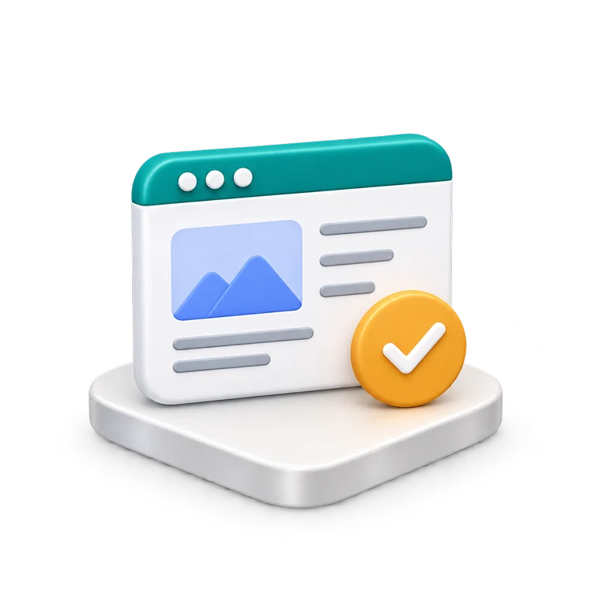
Saya uji setiap fungsi, lalu serahkan hasil beserta aksesnya ke Anda.
Langsung pakai tanpa proyek custom. Dua produk gratis, satu dengan uji coba 7 hari.
Perkirakan profit sebelum menentukan harga jual.
Untuk seller marketplace. Hitung biaya, profit, dan harga jual dari target margin Anda.
Fitur dan batas penggunaan gratis tercantum di dalam aplikasi.
Coba gratis ↗Olah PDF tanpa mengunggah file ke internet.
Potong, scan, gabung, dan tambahkan tanda tangan pada PDF langsung di perangkat Anda.
Setelah dibuka pertama kali, aplikasi dapat digunakan tanpa internet.
Buka aplikasi ↗Aplikasi kasir dan pembukuan untuk warung kelontong.
PROYEK CUSTOM & PRODUK
Hal yang paling sering ditanyakan sebelum memulai proyek atau mencoba produk.
Tidak perlu. Cukup ceritakan tujuan, siapa penggunanya, dan pekerjaan yang ingin dipermudah. Saya yang menerjemahkannya menjadi lingkup teknis.
Semuanya bergantung pada lingkup proyek, jadi kita diskusikan dulu. Setelah itu, saya kirim penawaran tertulis berisi biaya, jadwal, jumlah revisi, dukungan setelah serah terima, serta akses dan kepemilikan hasil pekerjaan.
Ya. Setelah serah terima, saya memberikan maintenance gratis dengan durasi dan cakupan sesuai kesepakatan di penawaran.
Bisa. Saya terbuka untuk mengembangkan sistem lebih lanjut, misalnya menambah fitur saat bisnis Anda bertumbuh.
Bisa. Saya bekerja remote dengan klien dari seluruh Indonesia maupun luar negeri, dengan komunikasi lewat WhatsApp atau email.
Perhitungan Seller dan Solusi PDF Offline bisa langsung dibuka gratis lewat tautannya. Kas Warungku tersedia di Android dengan uji coba gratis 7 hari, lalu paket berlangganan. Harga dan cara unduh ada di website Kas Warungku ↗.